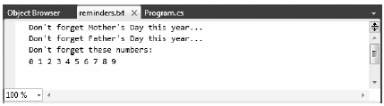

The StreamWriter and StreamReader classes are useful whenever you need to read or write characterbased data (e.g., strings). Both of these types work by default with Unicode characters; however, you can change this by supplying a properly configured System.Text.Encoding object reference. To keep things simple, assume that the default Unicode encoding fits the bill.
StreamReader derives from an abstract type named TextReader, as does the related StringReader type (discussed later in this chapter). The TextReader base class provides a limited set of functionality to each of these descendents; specifically it provides the ability to read and peek into a character stream.
The StreamWriter type (as well as StringWriter, which you will examine later in this chapter) derives from an abstract base class named TextWriter. This class defines members that allow derived types to write textual data to a given character stream.
To aid in your understanding of the core writing capabilities of the StreamWriter and StringWriter classes, Table 20-8 describes the core members of the abstract TextWriter base class.
Table 20-8. Core Members of TextWriter
| Member | Meaning in Life |
|---|---|
| Close() | This method closes the writer and frees any associated resources. In the process, the buffer is automatically flushed (again, this member is functionally equivalent to calling the Dispose() method). |
| Flush() | This method clears all buffers for the current writer and causes any buffered data to be written to the underlying device; however, it does not close the writer. |
| NewLine | This property indicates the newline constant for the derived writer class. The default line terminator for the Windows OS is a carriage return, followed by a line feed (\r\n). |
| Write() | This overloaded method writes data to the text stream without a newline constant. |
| WriteLine() | This overloaded method writes data to the text stream with a newline constant |
Note The last two members of the TextWriter class probably look familiar to you. If you recall, the System.Console type has Write() and WriteLine() members that push textual data to the standard output device. In fact, the Console.In property wraps a TextWriter, and the Console.Out property wraps a TextReader.
The derived StreamWriter class provides an appropriate implementation for the Write(), Close(), and Flush() methods, and it defines the additional AutoFlush property. When set to true, this property forces StreamWriter to flush all data every time you perform a write operation. Be aware that you can gain better performance by setting AutoFlush to false, provided you always call Close() when you finish writing with a StreamWriter.
To see the StreamWriter type in action, create a new Console Application named StreamWriterReaderApp and import System.IO. The following Main() method creates a new file named reminders.txt using the File.CreateText() method. Using the obtained StreamWriter object, you can add some textual data to the new file:
static void Main(string[] args) { Console.WriteLine("***** Fun with StreamWriter / StreamReader *****\n"); // Get a StreamWriter and write string data. using(StreamWriter writer = File.CreateText("reminders.txt")) { writer.WriteLine("Don't forget Mother's Day this year..."); writer.WriteLine("Don't forget Father's Day this year..."); writer.WriteLine("Don't forget these numbers:"); for(int i = 0; i < 10; i++) writer.Write(i + " "); // Insert a new line. writer.Write(writer.NewLine); } Console.WriteLine("Created file and wrote some thoughts..."); Console.ReadLine(); }
After you run this program, you can examine the contents of this new file (see Figure 20-3). You will find this file under the bin\Debug folder of your current application because you did not specify an absolute path at the time you called CreateText().
Figure 20-3 The contents of your *.txt file
Next, you will learn to read data from a file programmatically by using the corresponding StreamReader type. Recall that this class derives from the abstract TextReader, which offers the functionality described in Table 20-9.
Table 20-9. TextReader Core Members
| Member | Meaning in Life |
|---|---|
| Peek() | Returns the next available character without actually changing the position of the reader. A value of -1 indicates you are at the end of the stream. |
| Read() | Reads data from an input stream. |
| ReadBlock() | Reads a specified maximum number of characters from the current stream and writes the data to a buffer, beginning at a specified index. |
| ReadLine() | Reads a line of characters from the current stream and returns the data as a string (a null string indicates EOF). |
| ReadToEnd() | Reads all characters from the current position to the end of the stream and returns them as a single string. |
If you now extend the current MyStreamWriterReader sample application to use a StreamReader, you can read in the textual data from the reminders.txt file, as shown here:
static void Main(string[] args) { Console.WriteLine("***** Fun with StreamWriter / StreamReader *****\n"); ... // Now read data from file. Console.WriteLine("Here are your thoughts:\n"); using(StreamReader sr = File.OpenText("reminders.txt")) { string input = null; while ((input = sr.ReadLine()) != null) { Console.WriteLine (input); } } Console.ReadLine(); }
Once you run the program, you will see the character data in reminders.txt displayed to the console.
One of the confusing aspects of working with the types within System.IO is that you can often achieve an identical result using different approaches. For example, you have already seen that you can use the CreateText() method to obtain a StreamWriter with the File or FileInfo type. It so happens that you can work with StreamWriters and StreamReaders another way: by creating them directly. For example, you could retrofit the current application as follows:
static void Main(string[] args) { Console.WriteLine("***** Fun with StreamWriter / StreamReader *****\n"); // Get a StreamWriter and write string data. using(StreamWriter writer = new StreamWriter("reminders.txt")) { ... } // Now read data from file. using(StreamReader sr = new StreamReader("reminders.txt")) { ... } }
Although it can be a bit confusing to see so many seemingly identical approaches to file I/O, keep in mind that the end result is greater flexibility. In any case, you are now ready to examine the role of the StringWriter and StringReader classes, given that you have seen how to move character data to and from a given file using the StreamWriter and StreamReader types.
Source Code You can find the StreamWriterReaderApp project under the Chapter 20 subdirectory.